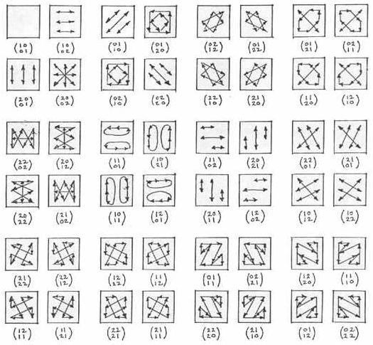
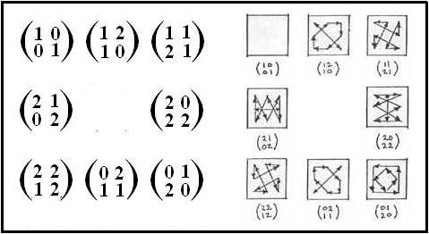
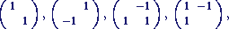

| Finite
Geometry Notes
|
"The group GL(2,Z) can be identified with the group of continuous automorphisms of the torus."Historically, of course, visualization of GL(2,Z) preceded that of GL(2,p). See, for instance, the Wikipedia article on Arnold's Cat Map and especially its illustration (animated gif, 3.5 mb) of a discrete version of an iterated toral automorphism applied to a picture of a pepper.
| Steven H. Cullinane
Visualizing GL(2,p). Expository Note. March 26, 1985 "The typical example of a finite group is GL(n,q), the general linear group of n dimensions over the field with q elements." -- J. L. Alperin 
The 48 actions of GL(2,3) on a 3x3 coordinate-array A are illustrated above. The matrices shown right-multiply the elements of A, where
Actions of GL(2,p) on a pxp coordinate-array have the same sorts of symmetries, where p is any odd prime. |
Quaternions
It is well known that the quaternion group
is a subgroup of GL(2,3), the general linear group on the 2-space over
GF(3), the 3-element Galois field.
The figures below illustrate this fact. (Here the "2" of the note above
is replaced by its equivalent, modulo 3: "-1.")
| From John Baez, "This Week's Finds in Mathematical Physics (Week 198)," September 6, 2003: Noam Elkies writes to John Baez: Hello again, |

Figure A
|
From the website of Priv.-Doz. Dr. H. Klein, The Translation Plane of Order Nine There are exactly four projective planes of order nine, and one of these planes is a non-Desarguesian translation plane. Theorem. Up to isomorphism, there exists exactly one non-Desarguesian translation plane of order 9. This translation plane is defined by a spreadset in a 2-dimensional vector space over the field GF(3), consisting of the following matrices.  As it turns out, the coordinatizing quasifield is a nearfield. Moreover the non-Desarguesian translation plane of order 9 has Lenz-Barlotti type IVa.3. |